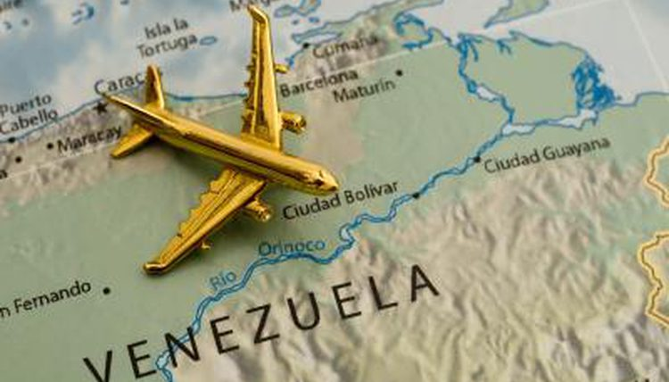
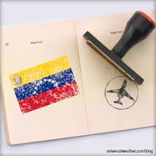

For this class we needed to interview a family member about their experiences as a person and then do a transcript about that interview. At this case I interview my mother about her experience as an immigrant and some other personal experiences
Interviewer: Veronica Sierra
Interviewee: Yinny Sierra 01/22/18
[My name is Veronica Sierra, I’m 17 years old and I’m sitting here in the Kitchen with my mom Yinny Sierra]
[Where and when you were born?]
I was born in Caracas in July 21 of 1969.
[Where did you grow up?]
I grew up… I was raised four years in Caracas, then we moved to Valencia when I was four years old and when I was eighteen I’ve moved to San Diego (a town in Valencia) in the State Carabobo, Venezuela.
[What was your childhood like?]
Very cool, I liked so much… I’ve have a good time. In that time there wasn’t internet and I could spend time with my cousins, I have a lot of cousins, so… we played perinola (toy) currufijo (venezuelan toy) emmm… la ere paralizada (game) la cuerda, las palmadas (some other games) it was another type of fun.
[What is your ethnic background?]
Hispanic.
[But... your heritage]
Oh ok, my Grandfather in my dad’s side was Venezuelan, my Grandmother in my dad’s side was French. My Grandfather in my mom’s side was Spanish and my Grandmother in my mom’s side was Black.
[Ok, Where is your mom’s family from? Where’s your dad’s family from? Have you ever been there? How was the experience like?]
My mom’s family is from Caracas, and my dad’s family is from Valencia, I have been in both states. Well my experience in that time was good, for me was wonderful, if you would see from your point of view as you see it now, that would be horrible, but for me was fantastic, I had a lot of experiences, I’ve travel a lot to the Falcon’s beaches, I went to Margarita Island, I went to Merida. I’ve been in differents states of Venezuela and my country is beautiful, we have beaches, we have deserts, we have snow, we have volcanoes and we have a lot of beautiful things.
[What are the most important lessons you’ve learned in life?]
Have patience, have goals try to make them real, always move on and be an useful person, have good manners and pass it out to the next generation, which is you.
[Where did these events happen?]
Excuse me?
[Where did these events happen?]
In life, the University of life, that’s the best experience that we can have, for example, my mom used to say: “Look, don’t do that” and sometimes I did it, and I was punched by the consequences but that teaches you to rise up because that’s what experience is for and thanks to God I have a good life, and if would born again, I would do it again.
[Ok, How has your life been different that what you’d imagine?]
Well I never imagined that I had to travel, it was the fourth time traveling to the USA, I’ve always come to visit but the last time that I came, my country Venezuela, was suffering a very hard situation and I had to think about you and that the situation was going to be more complicated, you were not going to have a future and so practically a ran away from my country for better quality of life for you.
[What is a moment in history that you personally remember? Why?]
The moment that I left my country, it was the hardest moment in my life, it was such a drastic change because in my country I had a career, I had my life made, I had my own house, my stuff, I had my future and suddenly to start again at my age is not easy, when I came here I was 46 years old and now I’m 48 and I had to learn a new language, is not easy, is hard for me but well… I hope to keep going and move on and keep studying, because my goal is keep studying, thanks to God that I’ve always liked to study.
[Have you suffered of racism?]
Not here, I’ve been treated so well, I didn’t feel any racism.
{Not anytime?]
Not anytime, I was treated with a lot of kindness, thanks to God.
[Do you feel proud of your roots?]
Of course, always, I feel proud of all of my grandparents of each one of them, of course, thanks to them I have a beautiful heritage and a spectacular race combination
[Well mom, was a pleasure to make you an interview, thanks for collaborate]
Your welcome my love, thanks to you.
 